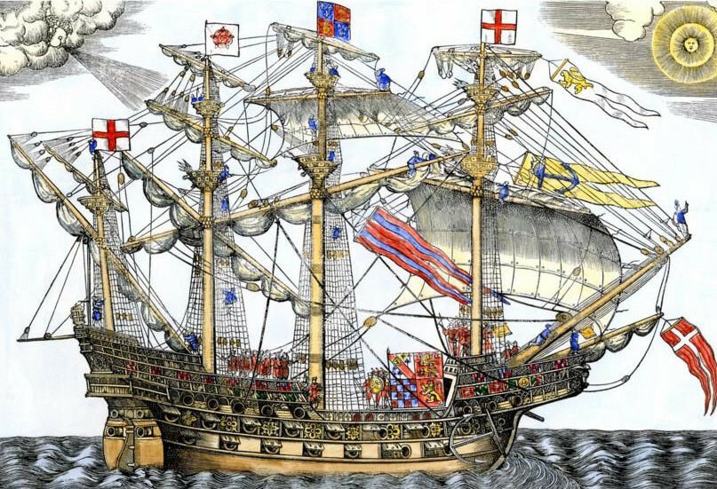
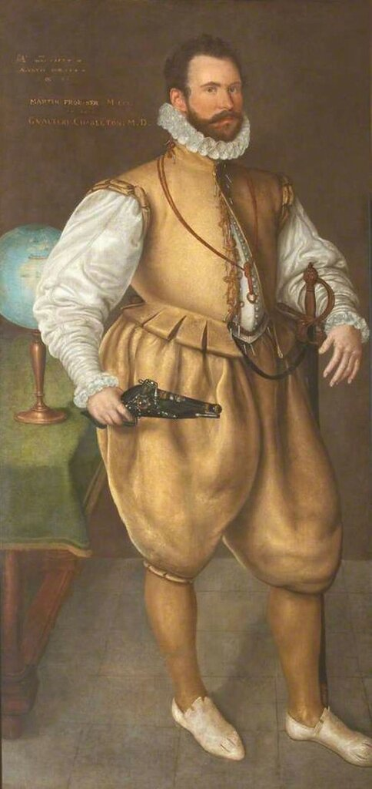
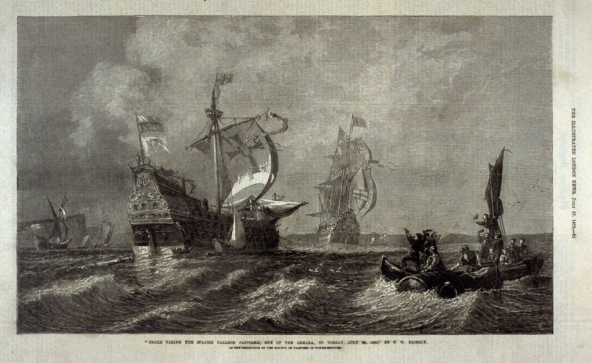

Прежде чем продолжить чтение Дневника солдата, отметим одно обстоятельство, которое характеризует отношения в среде командования английским флотом в ходе боевых действий против Испанской Армады. Известно, что на рассвете 1 августа рядом с пострадавшим от столкновения галеоном дона Педро де Вальдеса оказался сэр Фрэнсис Дрейк на своем галеоне «Ревендж» (Revenge). До сих пор морские историки пытаются, но не могут понять, каким образом английский вице-адмирал флота ее Величества оказался в этом месте, ночью, в одиночку, в стороне от основных сил своей эскадры. Попробуем и мы разобраться в этой загадке.
В то время, пока испанцы были заняты происшествиями с галеонами San Salvador и Rosario, капитаны английских кораблей собрались на флагманском галеоне Чарльза Говарда Ark Royal, чтобы определиться с боевым порядком, построившись в который можно более успешно преследовать испанскую Армаду (сэр Чарльз очень любил собирать военные советы на борту своего корабля).

Флагманский корабль английского флота галеон Ark Royal
Мне не удалось найти ясного свидетельства, какой ордер был избран на этом совещании, однако очевидным является одно: на предстоящую ночь ведущим (или дежурным?) кораблем английского флота назначен был Revenge (his Lordship [Чарльз Говард] appointed Sir Francis Drake to set the watch that night). Следовательно, Дрейк должен был нести на корме своего галеона зажженный фонарь-лантерну, по которой ориентировались бы все корабли английского флота. Получается, Говард уступил лидерство Дрейку, что было признанием заслуг и большой честью для старого пирата. Что из этого получилось, мы знаем из перебранки Дрейка с Фробишером, которая получила огласку после завершения эпопеи с Непобедимой армадой.
Мартин Фробишер (Martin Frobisher) известный английский мореплаватель, принявший участие в отражении экспедиции Непобедимой армады, свидетельствует, что фонарь на флагманском корабле Дрейка так и не был зажжен: «мы искали его, - пишет Фробишер, - но огонь так и не появился».

Портрет Мартина Фробишера (1577). Художник Cornelis Ketel (1548–1616). Коллекция University of Oxford.
Фробишер объясняет это со всей пиратской прямотой: Дрейк заметил поврежденное судно и «следил за ним всю ночь, чтобы захватить в качестве трофея» единолично. Это в пиратских байках говорится о братстве джентльменов удачи. В действительности все было значительно прозаичнее. И сэр Фрэнсис, отвечая на обвинения сэра Мартина, не очень утруждал себя поиском аргументов для оправдания своих действий. Он простодушно объяснил, что в темноте заметил какие-то подозрительные паруса и, видимо, просто забыл о том, что надо зажечь фонарь. А на рассвете он вдруг «обнаружил, что находится на расстоянии пары кабельтовых от Rosario.» «Да уж, - пишет в ответ Фробишер. - Ты находился на расстоянии двух-трех кабельтовых потому, что на протяжении всей ночи и не отходил дальше». (‘Ay marry, you were within two or three cables length, [because] you were no further off all night.’)
Но в этом споре были затронуты личные чувства двух приватиров. Мы же попробуем взглянуть на это событие без эмоций, со стороны.
Прежде всего скажем несколько слов о видимости на море той ночью. Астрономические данные свидетельствуют, что на эту дату приходится первая четверть луны. Однако ни в одном рассказе очевидцев тех событий ни слова не говорится о лунном свете. То ли тяжелая облачность, то ли густой туман, нередкий в это время года в Ла-Манше, но ночная тьма была, как говорится, кромешная. И когда наблюдатель на флагмане Ark Royal, следовавшем за Дрейком по достигнутой ранее договоренности, потерял из виду кормовой фонарь на корабле Дрейка, Говард растерялся. Вахтенные английского флагмана получили команду искать свет фонаря в море, и они вскоре обнаружили огонь, правда далеко от того места, где предполагалось нахождение корабля Дрейка. Ark Royal прибавил парусов и поспешил к обнаруженному огню. Фонарь перемещался очень быстро и экипажу Говарда пришлось использовать все свое мастерство и отличные качества флагманского корабля, чтобы, наконец, к рассвету сократить дистанцию. И тут Говард обнаружил, что все это время он гнался за флагманским кораблем противника. Ark Royal оказался в результате этой гонки почти в центре боевого ордера испанцев. Рядом были лишь два английских корабля, Bear и Mary Rose, не отставшие от своего флагмана на протяжении всего ночного бега за чужой лантерной. О положении остальных кораблей английского флота можно было судить лишь по кончикам мачт, видневшимся на горизонте. Следов корабля Фрэнсиса Дрейка обнаружить вообще не удалось. Вот как это событие освещается в рукописном документе из коллекции Cotton (считают, что это официальный отчет, A Relation of Proceedings, отредактированный лично Говардом, однако на подлиннике нет никаких пометок, позволяющих идентифицировать его происхождение. Привожу для справки, без перевода):
This night the Spanish fleet bare alongst by the Start, and the next day, in the morning, they were as far to leeward as the Berry. Our own fleet, being disappointed of their light, by reason that Sir Francis Drake left the watch to pursue certain hulks which were descried very late in the evening, lingered behind not knowing whom to follow ; only his Lordship, with the Bear and the Mary Rose in his company, somewhat in his stern, pursued the enemy all night within culverin shot ; his own fleet being as far behind as, the next morning, the nearest might scarce be seen half mast high, and very many out of sight, which with a good sail recovered not his Lordship the next day before it was very late in the evening.
State papers relating to the defeat of the Spanish Armada, anno 1588; by Laughton, John Knox, ed. Vol.1 (1894), p.8-9.
Мы видим, что Чарльз Говард не выдвигает никаких особенных обвинений против Дрейка, даже пытается оправдать его. Может быть потому, что сам выглядел неприглядно в этой истории? Говард не рассказывает о том, что произошло после того, как он и его два сотоварища оказались в самой гуще испанского флота. Ни в одном из испанских источников той эпохи также не упоминается этот инцидент. О нем мы читаем лишь у известного фламандского историка Эммануэля ван Метерена (Emanuel van Meteren или Meteeren, 1535–1612) в его документальной хронике по истории Нидерландов XVI в. Вот интересующее нас место во французском издании хроники
Cependant toute ceste nuict l’Admiral des Anglois suyvit de si pres les Espaignols , que le lendemain il se trouva presque tout seul parmy ſes ennemis , & les autres navires estoyent si loing de luy, qu’il estoit bien quatre heures apres midy devant qu’elles fussent toutes pres de luy. On dit qu'alors Don Hugo de Moncado , General de quatre Galiasses , requist avec grande instance du Duc de Medine, qu’il peut aborder l’Admiral, mais le ne le voulut point permettre, pour n’outre passer point ſa commission.
L'histoire des Pays-Bas d'Emanuel de Meteren. Estats Generaux, 1618. fol. 305
А вот как это же место выглядит в переводе на английский язык в известном труде Ричарда Хаклюйта (Hakluyt, Richard. The principal navigations voyages traffiques & discoveries of the English nation…)
In the meane season the lord Admirall of England in his ship called the Arke-royall, all that night pursued the Spaniards so neere, that in the morning hee was almost left alone in the enimies Fleete, and it was foure of the clocke at afternoone before the residue of the English Fleet could overtake him.
At the same time Hugo de Moncada governour of the foure Galliasses, made humble sute unto the Duke of Medina that he might be licenced to encounter the Admirall of England: which libertie the duke thought not good to permit unto him, because hee was loth to exceed the limites of his commision and charge.
Сделаем «усредненный» перевод на русский:
На протяжении всей этой ночи Лорд-адмирал Англии на корабле Арк-Ройял преследовал испанцев на такой малой дистанции от них, что наутро он оказался почти один в окружении вражеского флота, и лишь к четырем часам пополудни остальной английский флот догнал его. Говорят, что Уго де Монкада, командующий четырьмя галеасами, настойчиво просил герцога де Медину, чтобы он дал ему согласие взять на абордаж корабль Адмирала Англии; но герцог не пожелал дать на это своего согласия, так как не склонен был допустить превышение его полномочий и ответственности.
Смысл простой: испанский герцог не мог допустить, чтобы в единоборство с лордом-адмиралом вступил командующий небольшой эскадры. Не по Сеньке шапка. Это вторая, после отказа атаковать англичан в Плимуте, ошибка герцога Медина-Сидония, приведшая в итоге к поражению Непобедимой армады.
Сама процедура сдачи судна Nuestra Señora del Rosario англичанам также казалась странной. Все выглядело так, словно испанцы заранее готовили сдачу корабля.

Дрейк берет испанский галеон в качестве приза. The Illustrated London News (27 July 1872), по картине Oswald Walters Brierly (1872). Fine Arts Museums of San Francisco
Иначе чем объяснить, что с аварийного галеона ушел баркас с членами команды-англичанами, которые сотрудничали с испанцам (не было сомнения, какая участь ждала бы их, попади они в руки соплеменников), но командиры Rosario палец о палец не ударили, чтобы спасти 50 000 золотых дукатов из королевской казны, которые так и остались противнику. Точнее, которые «растворились» в ходе всей этой истории. Ричард Хаклюйт (Richard Hakluyt) так описывает событие: «солдаты просто поделили сокровище между собой», не уточняя, были ли эти солдаты испанцами или англичанами. Некоторая часть денег могла исчезнуть во время передачи полотняных мешочков с ними на Revenge, или разворована позже. Впрочем, на Дрейка совсем не похоже, чтобы он мог допустить такой беспорядок при взятии приза. Дон Франсиско де Сарате, корабль которого был захвачен Дрейком в 1579 году вблизи Акапулько, вспоминал, что «когда наш корабль подвергся разграблению, ни один человек не смел взять ничего без его разрешения: он благосклонно относился к своим людям, но наказывал их за малейший проступок.» В итоге в казну королевы попало лишь около половины от сокровищ с Rosario.
У нас еще много информации о том, что произошло после пленения дона Педро де Вальдеса, но это уже не имеет отношения к борьбе на море, а скорее относится к политике и коммерции. А это не наша тема.